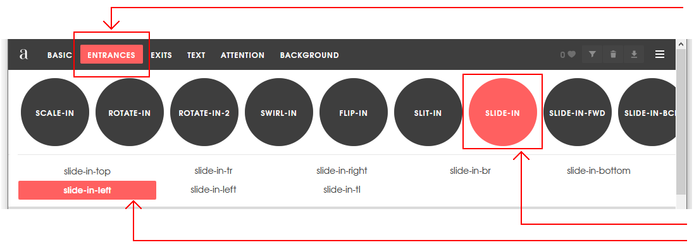
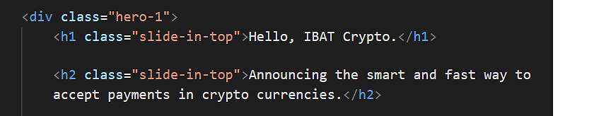

At the end of this Tutorial, you will be able to:
- Style the layout and appearance of a hero block in a sample web page.
- Animate text headlines so that they slide in from the top or left of a sample web page.
You can view finished version of the sample web page you will create in this Tutorial by clicking the link below. The finished sample will open in a new tab of your web browser.
About hero blocks
Research has shown that a typical web user will form an opinion about a web page in just 50 milliseconds after the page loads on their screen.
- If users like what they see, they will continue to read the page – and maybe purchase a product or service.
- If they don't like what they see, they will exit the web page and go to another. And your website will have lost a potential customer.
So-called hero blocks (sometimes known as jumbotrons) are large and typically rectangular areas at the very top of a web page. They are the first item seen by users, and are intended to capture their attention and engage their interest in the web page.
Because the fill most of the top of the user's screen, hero blocks are often referred to as displaying above the fold. This term comes from the era when newspapers were printed on large sheets of paper. And, when placed in shops, they were folded in half so that only the top half of the paper was visible to customers. For this reason, newspapers printed their most attention-grabbing headlines and images above the fold.

On mobile, tablet, laptop and desktop screens, above the fold content is what the users can see without needing to scroll down the web page.
In the next two Tutorials, you will learn how to create hero blocks with background images and background videos. However, not every hero block needs to use images or videos. See the examples below.

Working with your sample files
In this exercise, you will work with the following two files, a web page and a stylesheet:
- hero-text.html: Click this link to open the web page in a new tab of your web browser. Right-click anywhere in the web page and choose Save as... (Chrome) or Save Page As... (Firefox) from the context menu displayed. Save the web page in your websites/exercises folder with the name hero-text.html
- hero-text.css: Click this link to open the stylesheet file in a new tab of your web browser. Right-click anywhere in the browser window, and from the context menu, choose Save as... (Chrome) or Save Page As... (Firefox). Save the hero-text.css stylesheet file to your websites/exercises/assets/css folder.
You have now saved the two files you need for this Tutorial.
Inspecting the hero content and styles
In this section, you will update the styles of the hero-1 block within your sample files.
- In VS Code, open the hero-text.html web page and hero-text.css stylesheet.
- In your browser, display the hero-text.html web page. You can see that it contains a header with a class of hero-block. this contains a child div with a class of hero-text-container. And this contains a h1 main heading and an h2 sub-heading
Updating the hero block background colour
Here are some more examples of linear gradients for you to experiment with in your hero block.
/* Purple to orange - modern */ background-image: linear-gradient(90deg,#ff00cc,#333399);
/* dark Blue */ background-image: linear-gradient(90deg,#07092f,#165cc0);
Creating the slide-in-top CSS class
Follow these steps to create the slide-in-top class in your hero-single.css stylesheet.
- Go to this web page. Animista and click the Try me button.
- Across the top of the screen you can see a navigation menu bar of main options (BASIC, ENTRANCES, EXITS, TEXT ...).
For each of these main options, you can choose from a range of sub-options displayed as white text inside black circles on a draggable sub-menu.
Many of these sub-options also have sub-options of their own.

- In the main top menu, click the ENTRANCES option. Next, click the red circle containing the SLIDE-IN sub-option. Finally, click sub-sub-option named slide-in-top.

- At the right of the screen, click the {*} icon to display the CSS code that Animista has created for you.

- With the Autoprefixer option selected, click the Copy Class button.

- Paste the code into your hero-single.css file at the end of your stylesheet.
.slide-in-top { -webkit-animation: slide-in-top 0.5s cubic-bezier(0.250, 0.460, 0.450, 0.940) both; animation: slide-in-top 0.5s cubic-bezier(0.250, 0.460, 0.450, 0.940) both; }
- Return to the Animista screen, and click the Copy Keyframes button.

- Paste that code into your hero-single.css file at the end of the stylesheet.
/* ---------------------------------------------- * Generated by Animista on 2020-4-8 10:45:15 * Licensed under FreeBSD License. * See http://animista.net/license for more info. * w: http://animista.net, t: @cssanimista * ---------------------------------------------- */ /** * ---------------------------------------- * animation slide-in-top * ---------------------------------------- */ @-webkit-keyframes slide-in-top { 0% { -webkit-transform: translateY(-1000px); transform: translateY(-1000px); opacity: 0; } 100% { -webkit-transform: translateY(0); transform: translateY(0); opacity: 1; } } @keyframes slide-in-top { 0% { -webkit-transform: translateY(-1000px); transform: translateY(-1000px); opacity: 0; } 100% { -webkit-transform: translateY(0); transform: translateY(0); opacity: 1; } }
You have now finished creating the slide-in-top class. - When you apply this class to a heading or element in a web page, you may find that the animated element moves down a little too quickly.
In the hero-single.css stylesheet, increase the time taken for the sliding animation from 0.5s to 1s as shown below.
.slide-in-top { -webkit-animation: slide-in-top 1s cubic-bezier(0.250, 0.460, 0.450, 0.940) both; animation: slide-in-top 1a cubic-bezier(0.250, 0.460, 0.450, 0.940) both; }
Creating the slide-in-left CSS class
Follow these steps to create the slide-in-left class in your hero-single.css stylesheet.
- Return to the main Animista web page.
- In the menu across the top of the web page, click the ENTRANCES option.
- Next, click the red circle containing the SLIDE-IN sub-option.
- Finally, click sub-sub-option named slide-in-left. 
- At the right of the screen, click the {*} icon to display the CSS code that Animista has created for you.
- With the Autoprefixer option selected, click the Copy Class button.

- Paste the code into your hero-single.css file at the end of your stylesheet.
.slide-in-left { -webkit-animation: slide-in-left 0.5s cubic-bezier(0.250, 0.460, 0.450, 0.940) both; animation: slide-in-left 0.5s cubic-bezier(0.250, 0.460, 0.450, 0.940) both; }
- Return to the Animista screen, and click the Copy Keyframes button.

- Paste that code into your hero-single.css file at the end of the stylesheet.
/* ---------------------------------------------- * Generated by Animista on 2020-4-8 10:45:15 * Licensed under FreeBSD License. * See http://animista.net/license for more info. * w: http://animista.net, t: @cssanimista * ---------------------------------------------- */ /** * ---------------------------------------- * animation slide-in-left * ---------------------------------------- */ @-webkit-keyframes slide-in-left { 0% { -webkit-transform: translateX(-1000px); transform: translateX(-1000px); opacity: 0; } 100% { -webkit-transform: translateX(0); transform: translateX(0); opacity: 1; } } @-webkit-keyframes slide-in-left { 0% { -webkit-transform: translateX(-1000px); transform: translateX(-1000px); opacity: 0; } 100% { -webkit-transform: translateX(0); transform: translateX(0); opacity: 1; } }
You have now finished creating the slide-in-left class.
Applying the animated text classes
You will now apply the two new animated text classes in your stylesheet to your web page.
- In your hero-single.html file, add the slide-in-top class to your <h1> heading and <h2> sub-heading within the hero-1 block container as shown below. 
- Add the slide-in-left class to your <h1> heading and <h2> sub-heading within the hero-2 block container as shown below.
That’s it. You have now successfully updated the sample file of hero blocks.
Click hero-single.html to view a finished sample of this web page in a new tab of your web browser.
Uploading your files to GitHub
After finishing your web page and stylesheet, you are now ready to upload them to your account on GitHub.
- Open a new tab in your web browser and go to GitHub.com. If you are not already signed in to your GitHub account, sign in now.

- On your GitHub home page, click the ‘repo’ that holds your web pages. Its name will look as follows, where username is your chosen username on GitHub.
username.github.io

- On the next GitHub screen displayed, near the right of the screen, you can see a button named Add file. Click on it.

- From the dropdown list displayed, choose the option Upload files.

- In File Explorer (Windows 10) or Finder (Apple Mac), drag-and-drop your index.html file and your 📁 exercises sub-folder to upload them to your repository on GitHub.

- Scroll down to the bottom of the GitHub screen, and accept or edit the short message (Add files via upload) in the Commit changes box.
- Finally, click the green Commit changes button to upload your files.

Your updated home page and sample web page are now published on GitHub at web addresses similar to the following:
https://username.github.io/index.html
https://username.github.io/exercises/page-12.html
It may take a few minutes for your uploaded files to appear on GitHub.